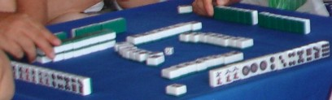

（51）現在の韓国 索子抜き麻雀事情
|
あさみ 12,010.10.02(sat)
2010年8月24日、韓国の慶尙北道(キョンサンブクド) 安東市(アンドンし) 豊川面(プンチョンミョン) 佳谷里(ガゴクリ) 佳日樹谷宗(ガイルスウゴクジョンテク)というところでで韓国のソーズ抜き麻雀の大会が行われた。その様子を韓国麻雀連盟のロボカイさんからメールしていただいた。単なる大会の話ではなく、韓国のソーズ抜き麻雀の歴史にも言及されており
実に興味深かった。
ロボカイさんによれば、韓国のソーズ抜き麻雀は、韓国では 韓国麻雀（ハングクマージャク)、あるいは釜山麻雀（ブサンマージャク)と呼ばれるという。釜山麻雀と呼ばれる理由は、釜山で行われたのが最初だからだという。“伝承であって、確証のある話ではない”と云うことであったが、釜山といえば昔から日本との接点。その釜山へ麻雀が伝播したのは1930年頃（s6年頃）だという。
1930年頃といえば、日本では昭和に入って大流行した麻雀が最盛期を迎えてた頃。そこでその頃、流行が釜山にまで及んだと云うのは非常に納得できる状況。ただそのとき釜山に到達したのが日本におけるソーズ抜きサンマであったのか*1、あるいは普通の麻雀が伝わったあと釜山でアレンジされ ４人でのソーズ抜きルールに改変されたのかは不明である。いずれにせよ当初はこの麻雀しかないので、単に麻雀と呼称されていたと思われる。
そこへ戦後になってから、日本式麻雀＝リーチ麻雀が流入した。そこで両者を区別するため、韓国麻雀とか釜山麻雀呼ばれるようになったのかもしれない。そして日本式のリーチ麻雀は、日本麻雀（イルボンマージャク) またはリーチ麻雀（リーチマージャク)と呼ばれているという。
日本で数牌を１種類抜くとなれば、サンマである。しかし韓国ではヨンマというところが根本的に異なる。またサンマはマンズを１種類抜くといっても と は残す（国士や清老頭のため）。しかし韓国の索子抜き麻雀では は残す（国士や清老頭のため）。しかし韓国の索子抜き麻雀では からまですべて抜く。 からまですべて抜く。
*1 日本で1930年頃（s６年頃）行われていたサンマでは、索子を抜くことが多かった。そのソーズ抜きサンマが韓国（釜山）へ伝播した可能性もある。そのソーズ抜きサンマが日本ではマンズ抜きに移行したのは、全体的にマンズよりソーズの方が判別しやすかった（マンズは からまで、全体的に同じような紋様）だからと思われる。
|
こんにちわ、ロボカイです。
８月21日、知り合いに招かれてソーズ抜き麻雀の会を参観しました。このグループは、１年間に４回（３ヶ月に１回）、ソーズ抜き麻雀の会を行うそうです。
このソーズ抜き麻雀は1930年代、韓国で麻雀が始まったころから行われたそうです。ソーズ抜き麻雀が始められた理由はよく分かりませんが、韓国人は気が早いからだと思います。全数牌で麻雀すると時間が長すぎると思って、数牌１種類を全部抜いたのだと思います。数牌が１種類 少ないうえに4人でゲームするので相当 迅速になりました。７巡目になったら１局の後半に突入したと考えるのが普通です。
１種類抜くならソーズではなく、マンズやピンズを抜いても同じことです。それがソーズ抜きになったのは、 と がマンズやピンズにくらべて判別しにくいというのが理由のようです。「数牌の１種類を抜きたいが、何を抜こうかな。あ、見分けにくいソーズを抜いたらいいよね」という訳です。*1
韓国でソーズ抜き麻雀をする人の規模はよく分かりませんが、私が参観した この麻雀会は普通４～６卓（16～24人）は集まります。今回は４卓16人 集まりました。私が考えるに、この会のメンバーの日程が全部合えば、30人以上は集まると思います。
ただソーズ抜きの麻雀会はここだけではなく、全国にあります。そこで全国の麻雀会の数はよく分かりません。これはオフラインの活動しかしていない人も多いからです。しかしソーズ抜き麻雀の定期麻雀会を、こんな大きい規模でやっているところは（私が知る限りでは）２つしかありません。その１つがここです。ちなみにソーズ抜き麻雀をする年齢はほとんど50歳以上です。
ただソーズ抜き麻雀の大会といっても親睦を目的としています。そこでリーチ麻雀大会のように順位を出すことはありません。集まって麻雀会を始め、食事したり酒を飲みながら麻雀をする（もちろん賭け麻雀)。そんな感じです。
そこで１回のゲーム時間や全ゲーム回数みたいなものもありません。場の概念がないので和了った人が東家となり、同じメンバーでエンドレスで続きます。では最初に同卓したメンバーが最後でそのメンバーでゲームするかと云えば、そうでもありません。
「みんな、夕飯を食べましょう」
「あぁ眠い。オレはそろそろ抜けるよ」
「俺、もうお金が無い...」
などの場合に区切りやメンバーチェンジが発生します。
またゼンメンバーが４で割り切れないとき(待機者が1～3人いる場合)、一定なゲーム回数を設定して、そのテーブルの中でラスと待機者をトレードすることがあるようです。これは仁川市(インチョンし) 桂陽区（ケヤンく) 鵲田洞（チャクチョンドン）にあるソーズ抜き麻雀会のメンバーから聞いたことです（仁川市の麻雀会は今回の麻雀会の首都圏支部みたいな感じです。安東市で行われた麻雀会の首都圏メンバーが２週に１回、週末に麻雀会をすると聞きました）。
ソーズ抜き麻雀のルールは以前にもお話しましたが、最初の親は    でを引いた人がなります。あとは その局でアガった人が親になります。したがって場風はありませんが、自風はあります。でも前の局でアガった人が親（東家）になるせいで、自風を勘違いしやすいです。自動卓のようにフリサイした人の前のランプが点灯すればいいのですが、手積み卓なので そういうことも起きるのだと思います。 でを引いた人がなります。あとは その局でアガった人が親になります。したがって場風はありませんが、自風はあります。でも前の局でアガった人が親（東家）になるせいで、自風を勘違いしやすいです。自動卓のようにフリサイした人の前のランプが点灯すればいいのですが、手積み卓なので そういうことも起きるのだと思います。
韓国のソーズ抜き麻雀は基本役による二翻縛りと三翻縛りがありますが、一般的は二翻縛りです。そこで門前アガリを目指す傾向があります。これは門前そのものに基本役の一翻があるからです（門前ツモならすぐ二翻になります）。平和（ピンフ）もかなり目指します。門前(1)、平和(1)で二翻あるからです。役牌のトイツが２つあれば、鳴いても二翻を作りやすので もっと楽になります。
ホンイツも二翻ですが、数牌が２種類しかないので相手に読まれやすくなります。そこで普通 ホンイツに振り込むときは、マンズのホンイツとピンズのホンイツの勝負で負けたときです。もちろん一通も狙われますが、チーがないので かなり難度が高いです。
私もソーズ抜き麻雀の実際にプレーしたのは、今回が初めてでした（ネットでは何回か経験してますが)。ちょっと体験したくらいですが、かなり斬新な感じで魅力もありました。ソーズ抜き麻雀はリーチ麻雀の亜流だと下目に見たこともありますが、これが完全に勘違いだと気づきました。後に機会があったら、もう一度、楽しみたいですね。
基本ルールは韓国索子抜き麻雀(http://www9.plala.or.jp/majan/rule44.html）の通りですが、グループによって細部の適用が異なります。以下は今回の麻雀会で適用したルールです。
1．場の概念が無い（基本ルール通り）。
2．フリテンは現物牌のみ。
3．基本役による二翻縛り。
4．和了したとき加算される付加翻数は、鳴き０翻，門前ロン三翻，門前ツモ五翻。
5．赤ドラあり。 で和了ったら、翻数合計×２。
6．点棒は区分せず、10個持つ。
7．点棒の価値は1個当たり1000ウォン*3
8．1翻当たり500ウォン。
9．持ち点棒以上の翻数は、直接 現金で精算。
10．和了った人の点棒の受け取りが合計5個以上なら、点棒１個，10個以上なら点棒２個、20個以上なら点棒３個をゲーム代(麻雀会管理代)で支払う。
※例１ [門前(1)＋ツモ(1)＋懸賞(1)＋和了したとき加算する設定した翻数(5)]×3＝24翻 → 500ウォン×24＝12000ウォン →
点棒12個を受け取り(1人当たり点棒4個)。→ 点棒2個をゲーム代で支払い。
※例２ 鳴いてロンアガリの場合
[ホンイツ(2)＋役牌(1)＋懸賞(3)＋和了したとき加算する設定した翻数(0)]×2（1人払い)＝12翻 → 500ウォン×12＝6000ウォン
→ 点棒6個を受け取り。→ 点棒1個をゲーム代で支払い。
11．1巡目に同じ字牌が捨てたら流局。字牌連打(？)
12．原則的には先ツモは認めないが、なぜか一般的に先ツモをする...
13．ラス巡目の牌は捨てなくてもいい（理由ははっきり分かりませんが、個人的には先ツモのせいだと思います)。
14．流局になったら、親は流さずに対局者全員が一定な点棒を供託して次のゲームを始めます。
以上です。
ではまた、ロボカイ
|
その後、ロボカイさんから贈られてきた索子抜き麻雀会の模様。
 麻雀会というより、親睦会という雰囲気。 麻雀会というより、親睦会という雰囲気。

当然ながら、索子はゼロ (^-^；
|